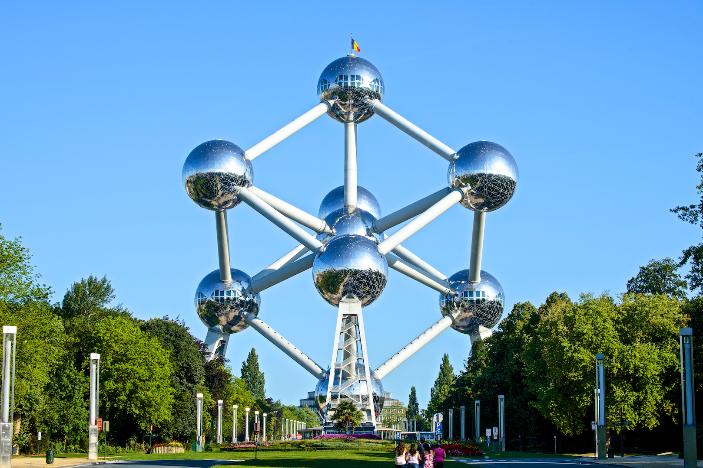
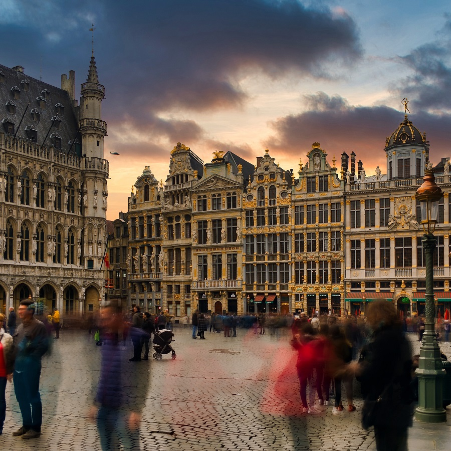

When we talk about Belgium, all that gets into one's mind is the land of fries and waffles!
But there exists untold beauty in this land far from what satisfies the palate. Today, I am here to take you on a virtual tour. On-y Va!
The Atomium is a landmark modernist building in Brussels, Belgium, originally constructed as the centrepiece of the 1958 Brussels World's Fair . Designed by the engineer André Waterkeyn and the architects André and Jean Polak.
To know more about the atomium, visit, The Grand Atomium
The Grand-Place (French:"Grand Square") or Grote Markt (Dutch) is the central square of Brussels, Belgium. It is surrounded by opulent Baroque guildhalls of the former Guilds of Brussels and two larger edifices; the city's Flamboyant Town Hall, and the neo-Gothic King's House or Bread House building, containing the Brussels City Museum. The square measures 68 by 110 metres (223 by 361 ft) and is entirely paved
If the Grand Place interests you, You can know more at; The Grand Place
Contact the following pwople to reserve your slot
| Name | Contact |
|---|